Ustes Greenridge
This is a problem in mathemetical analysis/number theory that concerns the infinite sum of inverse squares, which was first posed by Pietro Mengoli and solved by Leonhard euler. Essentially, it asks what the precise result of this summation would be:
Leonard Euler eventually determined it to be π² divided by 6. Ideally, this summation goes to infinity, but that's not possible given that we're working with finite memory.